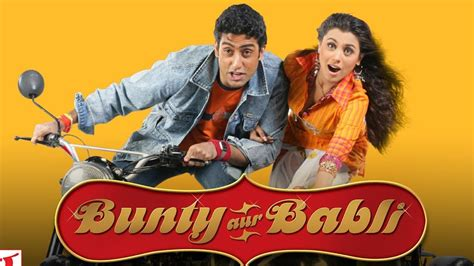
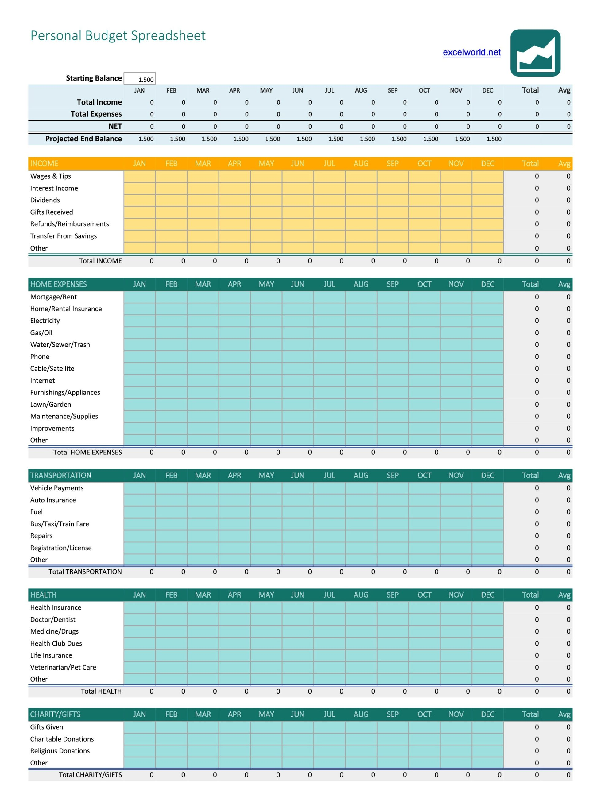

Who wants to become a crorepati?
Why?
How to become Financially Independent?
-- Abhi Sawant
About Me
ex-IIT
ex-Yahoo!

ex-Samsung (South Korea)
ex-Mindseed


ex-Flipkart
ex-Amazon India
ex-Amazon USA

registered my own software development company in 2014
currently volunteering as a 9th grade Maths teacher for under-priviledged children in Govandi, Mumbai
why does all this matter to you?
FIRE
Financially Independent, Retired Early
achieved FIRE in Dec-2024, at the age of
42
passionate about sharing my learnings to help everyone become "Financially Independent"
"Retired Early" is optional
NOT a Certified Financial Advisor
sharing based on my own knowledge and experience
FI Basics
Bunty aur Babli
Note: This is a work of fiction. Names, characters, places and incidents either are products of the author’s imagination or are used fictitiously. Any resemblance to actual events or locales or persons, living or dead, is entirely coincidental.
Bunty
- earns INR 1,00,000/- per month
- spends 90,000/- on loan EMI, groceries, utilities, entertainment, etc
- left with 10,000/- savings
Babli
- earns INR 2,00,000/- per month
- spends 1,80,000/- on loan EMI, groceries, utilities, entertainment, etc
- left with 20,000/- savings
Time to become a Crorepati
- Bunty
- 100,00,000 / 10,000 / 12
- = 83.33 years
- Babli
- 100,00,000 / 20,000 / 12
- = 41.66 years
Babli - 2
- invests in SIP
- at 10% annual compound interest
- how much time will it take to reach 1 Cr?
- remember, Babli - 1 had needed 41.66 years
16 years, 6 months
that's the power of investing!
Babli - 3
- invests 40,000
- i.e. saves more, and hence invests more
- how much time will it take to reach 1 Cr?
- remember, Babli - 2 had needed 16 years, 6 months
- i.e. savings amount has a direct impact on time
11 years, 6 months
Babli - 4
- same as Babli - 2 (i.e. 20,000 savings) , but increases investments by 10% per year
- how much time will it take to reach 1 Cr?
- remember, Babli - 2 had needed 16 years, 6 months
- again, savings has a direct impact on time
9 years, 2 months
Chulbuli
- earns 5L per month
- spends 5L per month
- how much time will it take to reach 1 Cr?
- again, savings has a direct impact on time
Lessons
3 step path to "Financial Independence"
Earn
Save
Invest
you CANNOT reach FI if you skip/miss any step
you DON'T need anything fancy or risky (like stock trading, etc) to reach FI
Investing Lessons ...
- you can only invest that which you save, so
- increase savings
- but Savings = Income - Expenses, so
- increase income, and
- decrease expenses
- invest regularly
- don't try to time the market
- start early
- the best time to plant a tree was 5 years ago. the next best time is today. so do it!
FI Basics ++
achieving FI is as simple as
passive income >> expenses
buy low, sell high
increase income
- work harder
- work smarter
- upskill (invest in your own education)
- don't undertake "shiny object" projects not related to your field; it's a trap
- partner / collaborate
- network / improve connections
- work harder and smarter
- great talent cannot beat good talent + great hard work
decrease expenses
focus on needs
- रोटी, कपडा, मकान
- medical needs / insurance
- education (for kids, and self)
reduce wants
- entertainment, social status
- do NOT buy on credit card if cannot pay in full at EOM
- don't eliminate completely, else what is life for
FI Intermediate
Eliminate Loan

a way to reduce expenses
Eliminate Loan ...

Increase Savings
- pay yourself first
- automate
- start with 10% savings
- slowly, increase savings %
- improve lifestyle at a lesser rate than increase in income
Tracking
Tracking ...
- use apps like AndroMoney, EveryDollar, Expensify, Fuelio, Mint, and many more
- excel sheets, google sheets, are most flexible
- more than the tool, you need discipline
- track for a few months before you go to next steps
Budget
Rinse and Repeat
- create and update budget a few times
- needs+wants v/s savings needs to stabilize
- more than the tool, you need discipline; especially for tracking
Balance sheet
Lessons
- use tracking and budgeting to increase savings
- create a balance sheet to understand your net worth
most importantly, remember that
life is not an excel sheet
have fun!
FI Advanced
Insurance
- do NOT confuse insurance and investment
- stay AWAY from ULIPs at all cost
Term Insurance
Health Insurance
Emergency Fund
Good v/s Bad Debt
Good:
- very long term
- low interest rates
- tax benefits
- eg: home loan, education loan, etc
Bad:
- short term
- high interest rates
- eg: personal loan, car loan, etc
- not paying credit card balance in FULL, EVERY MONTH is WORST
Investing for Passive Income
passive income >> expenses
- investment is
- long term game
- for passive income
Investing for Passive Income ...
- stock trading is NOT investment
- since it's neither long term, nor passive
- it is a full time job
- do not do it if you don't have time and passion
- you CAN become financially independent without stock trading
- i have!!!
Investing for Passive Income ...
- many modes of investment:
- Fixed/Recurring Bank Deposits
- Gold
- Mutual Funds
- Real Estate
- etc
Investing for Passive Income ...
multiple investments based on timelines of needs

longer timeframe == higer risk
Define your target number --Ankur Warikoo

In Closing
Summary
- 5 most important things to achieve FI are
- passive income >> expenses
- define your enough number and run chase it shamelessly
- automate
- more than any tool or technique, you need discipline
- improve your lifestyle at a lesser rate than increase in pay
don't forget the basics
Earn
Save
Invest
you CANNOT achieve FI without this
actually, there's 1 more thing that is most important
life is not an excel sheet; have fun!
- skipped even more advanced topics like:
- buffers
- ETFs
- risk management
- portfolio management

for FREE personalized guidance, contact me at h2w2.life@gmail.com